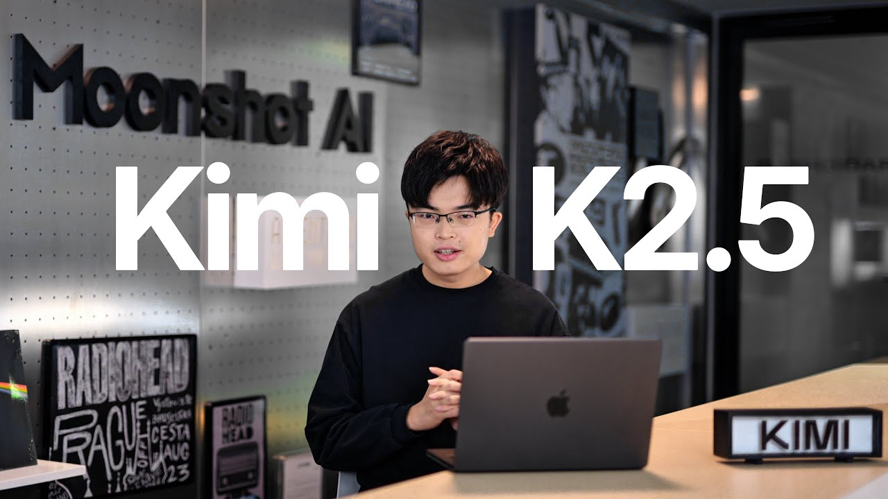

Voices
Yang Zhilin Interview
FIELD NOTES
Published · Business Interviews (《商业访谈录》), Episode 113

Yang Zhilin (杨植麟) is the founder of Moonshot AI and Kimi. This standalone reader presents a complete English translation of the Chinese conversation in episode 113 of Zhang Xiaojun’s Business Interviews (《商业访谈录》), translated from the reviewed Korean edition. The roughly 101-minute discussion covers K2, agentic LLMs, reinforcement learning, products, and organizations.
- Runtime
- 1:40:59
- Format
- 06 CHAPTERS
- English translation transcript
- 2,511 SEGMENTS
CARROT CAVE INSIGHTS
- In an era when solving problems gives rise to new ones, organizations that sustain their learning loops have an advantage over those that possess the right answers.
- The bottleneck in the race to build agents is not just model intelligence, but the product system that designs tools, context, environments, and rewards together.
- As high-quality data grows scarcer, competitive advantage shifts from the volume of data to how much learning signal can be extracted from each token.
- When reinforcement learning overfits to a particular benchmark, it becomes a matter of gaming the evaluation rather than improving performance. That makes a suite of environments supporting generalization essential.
- If we see AI as an amplifier of civilization, we need to plan not only for the speed of knowledge production, but also for whether jobs, safety systems, and institutions can absorb that pace of change.
Interview Details, Sources, and Method
- Original title: 和杨植麟时隔1年的对话：K2、Agentic LLM、缸中之脑和“站在无限的开端”
- Interviewee: Yang Zhilin (杨植麟), founder of Moonshot AI and Kimi
- Interviewer: Zhang Xiaojun (张小珺), Business Interviews (《商业访谈录》), Episode 113
- Publication date: August 27, 2025
- Actual duration: 1:40:59 based on ASR; 1:41:14 in the original metadata
- Method: The original Chinese audio was transcribed using Whisper large-v3-turbo. After excluding the trailer and repeated introduction, 2,511 segments were translated into Korean, preserving their chronological order and timecodes. This English translation was made from the reviewed Korean edition.
Complete English translation transcript
Loading the full transcript…
Endless Snow-Capped Mountains and the Evolution of Reasoning and Agents
00:00:00
After introducing the interview and Kimi K2, the discussion likens AI progress to “endless snow-capped mountains,” where solving one problem reveals another. It treats AGI as an ongoing direction rather than a fixed destination, and explains two ways of scaling test-time compute: strong reasoning and multi-turn agents that use external tools.
First-Party Product Integration and K2’s Training Efficiency
00:16:51
The discussion explores the advantages of first-party products that let model companies train models together with tools and context, as well as the relationships among reasoning, agents, innovation, and multi-agent organizations. It then explains the decision to shift from a focus on pretraining and SFT to reinforcement learning and agents, K1.5’s validation of reinforcement learning, and K2’s approaches to token efficiency, optimizers, and data rewriting.
Agent Generalization and Training Environment Design
00:33:07
The discussion identifies the limits of agent training that overfits to benchmarks or individual tasks, along with inadequate evaluation, as key bottlenecks. It covers the long-term accumulation of technology, infrastructure, and data needed for K2; code’s role as a tool connecting the brain to the outside world; and the need for curriculum learning and environments with diverse tasks at appropriate difficulty levels.
General-Purpose Agents, Open Source, and Model-Level Products
00:49:47
With general-purpose agents as the goal and coding as an important subset, the discussion examines the challenges of tool generalization, long context, and reward design for reinforcement learning. It explores the role and limits of open source; model-level products that integrate models, tools, and context during training; the difficulty of combining multiple modalities and tasks in a single model; and how interactions change with model capabilities.
User Value and Product and Business Strategy
01:05:18
The discussion highlights noise in user feedback and the limits of the data flywheel, then explores the role of products in translating user needs into evaluations and the business potential of APIs and first-party products. It goes on to cover technical strategy choices and experimentation; follow-up work on K2’s post-training, multimodality, generalization, and long context; the boundary between first-party products and vertical agents; and the experience of scaling up K2.
Reinforcement Learning in Research and Organizations, and What AI Means
01:23:02
The discussion explores the potential for generalization through larger base models, reinforcement learning, world models, and evaluation. Connecting hypothesis-driven research and testing to organizational management, it explains the balance between SFT-style instructions, RL-style rewards, and reward hacking. It then reflects on the founder’s mindset, AI’s value and risks for civilization and its effects on society, and the company’s adaptation and technology-centered strategy, before closing with a brief Q&A.